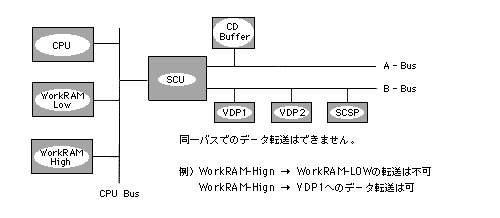

Return to previous page | Return to menu | Go to next page
Bool
Other functions
Data transfer request during blanking
void slTranferEntry(str , dst , size)
void *str ;
void *dst ;
Uint16 size ;
str Start address of transfer source dst Destination start address size Amount of data transferred (bytes)
Data transfer is performed during V_BLANK.
The parameter “size” specifies how many bytes of data are to be transferred.
None
Since data transfer is performed using the DMA indirect mode built into the SCU, data transfer between the same bus is not possible.
For details, refer to “HARDWARE MANUAL vol.1: Chapter of SCU”.
The figure below shows the bus image model.

slTransferEntry